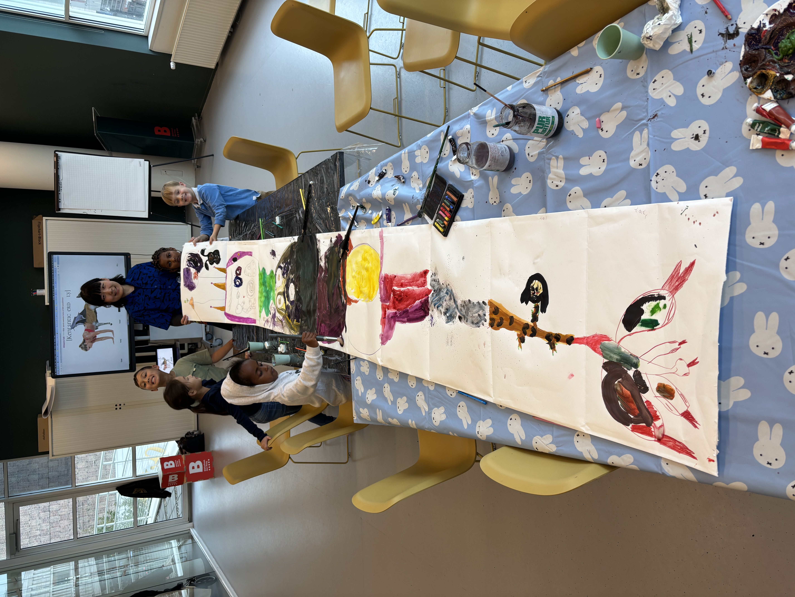
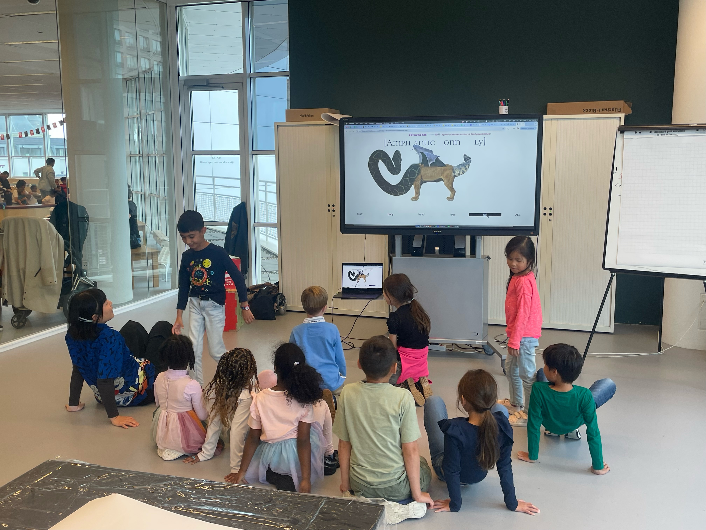
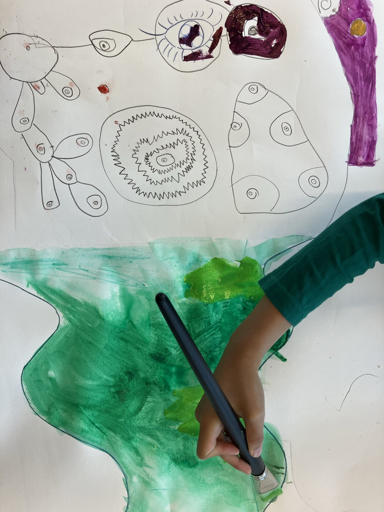
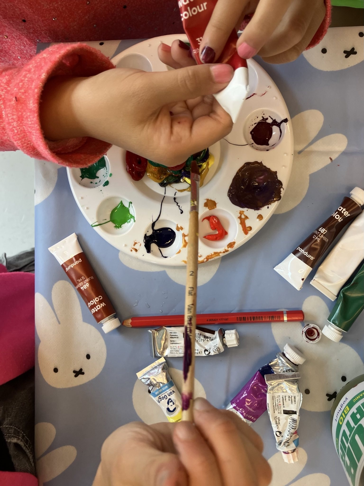

Chimera Drawing Workshop
On September 17th, I gave a drawing workshop with children at the bibliotheek den haag. The idea was to draw a 3 and half meter long chimera together, with everyone drawing a body part that connects to the others.
First, the children learned about chimeras in various mythologies and cultures, as well as the Pokémon with chimera features. Then, I led a yoga session where we looked at the generated chimera (from a website called "chimera-lab" that I made as a student) and created our own yoga poses inspired by the chimera.
Finally, we had a lot of fun drawing the long creature! The children were curious and never afraid of new things. We named it "The Hague Mutant" and imagined that this creature cam digest all the waste in the city.
The drawing will be shown as part of the Stadstekenaar project.
First, the children learned about chimeras in various mythologies and cultures, as well as the Pokémon with chimera features. Then, I led a yoga session where we looked at the generated chimera (from a website called "chimera-lab" that I made as a student) and created our own yoga poses inspired by the chimera.
Finally, we had a lot of fun drawing the long creature! The children were curious and never afraid of new things. We named it "The Hague Mutant" and imagined that this creature cam digest all the waste in the city.
The drawing will be shown as part of the Stadstekenaar project.
Info & External Links
☞ ArtLab Bibliotheek Den Haag
photos by Odine Burghouwt and Junia Haumahu
photos by Odine Burghouwt and Junia Haumahu



